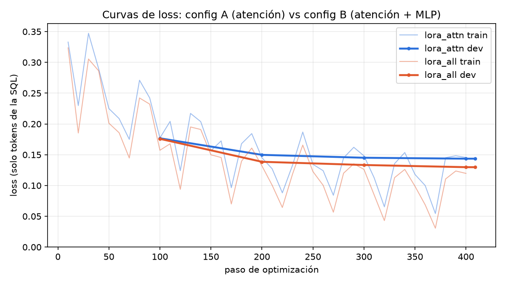
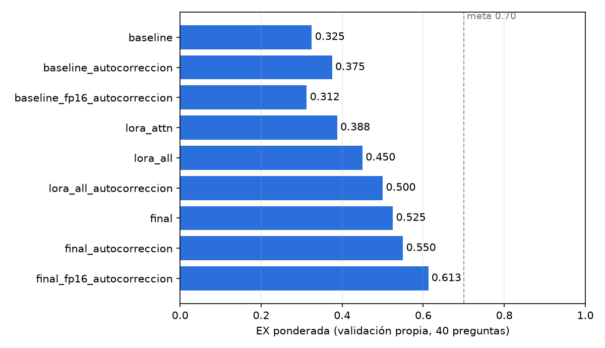
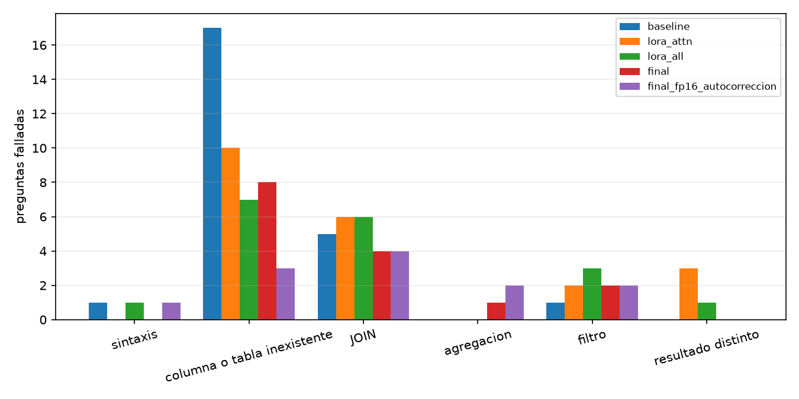
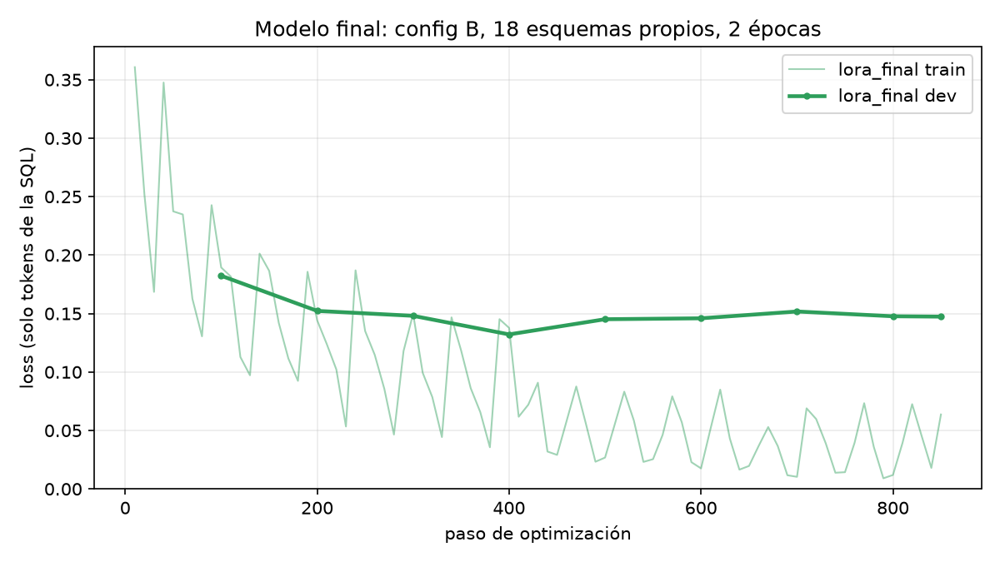

Qwen2.5-Coder-1.5B-Instruct + adapter LoRA → consultas MySQL 8.4.10
Andrés Mazariegos · June Herrera
Universidad del Valle de Guatemala · octubre 2026
SHOW CREATE TABLE con COMMENT + pregunta en españolSELECT / WITH … SELECTONLY_FULL_GROUP_BYMétrica: EX ponderada (exactitud por ejecución)
| Nivel | Contenido | Peso |
|---|---|---|
| fácil | una tabla | 1 |
| media | JOIN, GROUP BY, HAVING | 2 |
| difícil | subconsultas, WITH, ventanas, fechas | 3 |
Orden solo si se pide · números a 2 decimales · columna extra no penaliza
sqlglot y se exige mismo resultado que en SQLiteCOMMENT en español| Descarte | Pares |
|---|---|
| resultado distinto a SQLite | 408 |
| error en MySQL (ONLY_FULL_GROUP_BY…) | 191 |
| prompt > 2 048 tokens | 183 |
| traducción alteró un literal | 83 |
system: Eres un experto en bases de datos MySQL 8.4 …
Responde únicamente con una consulta SQL …
user: Esquema:
CREATE TABLE `ord_srv` (
`id_ord` int NOT NULL COMMENT 'Número de orden',
`f_ing` date NOT NULL COMMENT 'Fecha de ingreso',
…
FOREIGN KEY (`id_veh`) REFERENCES `veh` (`id_veh`)
) COMMENT='Órdenes de servicio';
Pregunta: ¿Cuántas órdenes …?
assistant: SELECT …
compactar_esquema: quita ENGINE, CHARSET, índices secundarios; conserva tipos, COMMENT, PK, FK;)A · lora_attn | B · lora_all | |
|---|---|---|
| Módulos | q, k, v, o | + gate, up, down |
| Parámetros entrenables | 4.36 M (0.28 %) | 18.46 M (1.18 %) |
| Tiempo (RTX 5070 Laptop) | 77.7 min | 92.7 min |
| VRAM máx | 3.76 GB | 4.11 GB |
| Loss dev final | 0.144 | 0.130 |
| EX ponderada | 0.388 | 0.450 |
Hipótesis (antes de entrenar): B > A. Las MLP guardan los patrones de generación (dialecto, CTE, ventanas); la atención decide sobre todo a qué columnas mirar.
Resultado: confirmada. A arregla las fáciles (7→10/12); B además las medias (6→10/16).
Comunes: r=16, α=32, lr 2e-4 coseno, batch efectivo 16, 1 época, 6 532 ejemplos.

| Modelo | EX | F | M | D |
|---|---|---|---|---|
| Baseline | 0.325 | 7/12 | 8/16 | 1/12 |
| A (atención) | 0.388 | 10/12 | 6/16 | 3/12 |
| B (atención+MLP) | 0.450 | 10/12 | 10/16 | 2/12 |
| B + autocorrección | 0.500 | 10/12 | 12/16 | 2/12 |
| Final | 0.525 | 11/12 | 11/16 | 3/12 |
| Final + autocorrección | 0.550 | 11/12 | 12/16 | 3/12 |
| … en fp16 (T4) | 0.613 | 11/12 | 13/16 | 4/12 |
| Base + autocorrección: 0.375 (bf16) / 0.313 (fp16) → mejora +0.175 / +0.30 | ||||

ejecutarejecutar(sql) → si hay error, se agrega al diálogo:Solo detecta errores de ejecución; no corrige consultas que corren pero responden otra cosa.
| sin | con | Δ | |
|---|---|---|---|
| Baseline | 0.325 | 0.375 | +0.050 |
| Config B | 0.450 | 0.500 | +0.050 |
| Final | 0.525 | 0.550 | +0.025 |
| Columna inexistente final: 8 → 4 · ejecutan 32 → 35 · 3.1 s prom., 18.1 s máx. (< 30 s) | |||

t.att_first_name; el fine-tuning y la autocorrección lo bajan a 3–4SUM(x + SUM(y)), olvida comparar con el promedio del grupo'talk'; omite IS NOT NULLCOUNT(col), pre-agregación de detalle
EX 0.450 → 0.525 (sin autocorrección) · JOIN 6 → 4 · difíciles 2 → 3. La loss de dev toca su mínimo en la época 1 (0.132) y sube a 0.147: hay algo de sobreajuste de estilo, pero la EX (que acepta consultas equivalentes) mejora, así que entregamos el de 2 épocas.
con adapter · intervalo 0.42–0.68
sin adapter → mejora ≈ +0.20